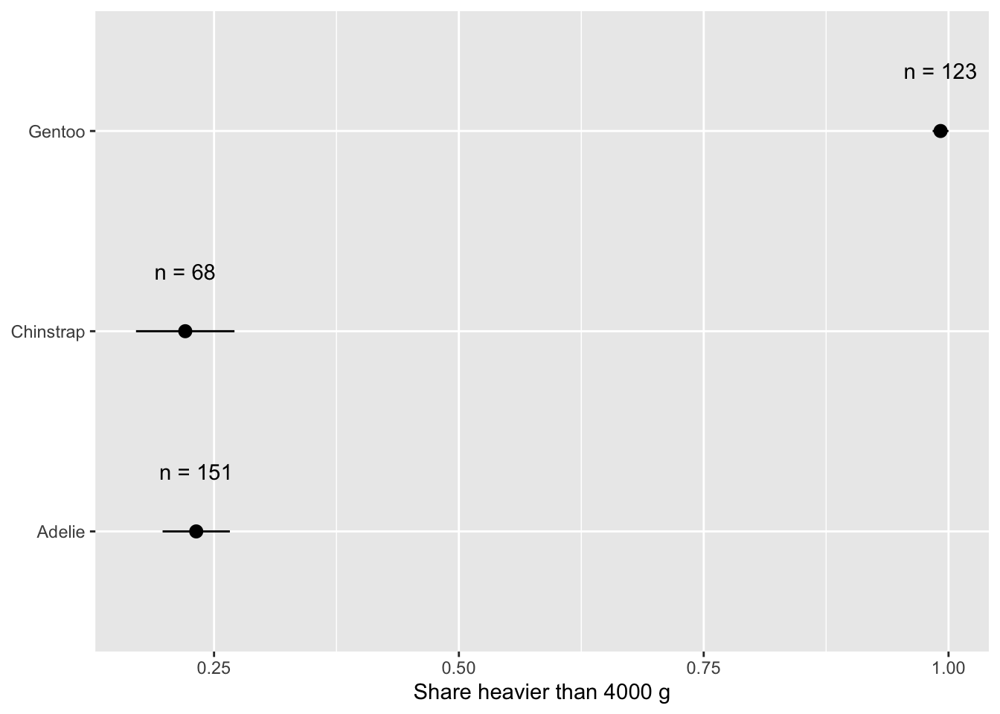
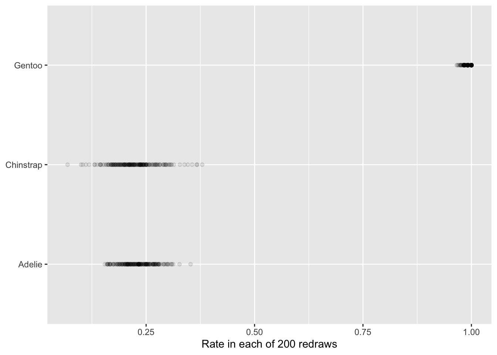
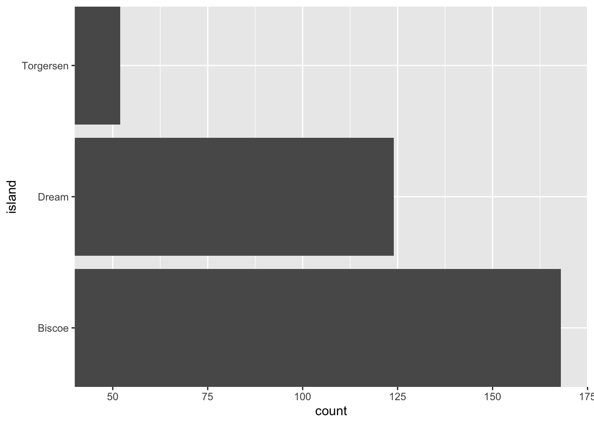
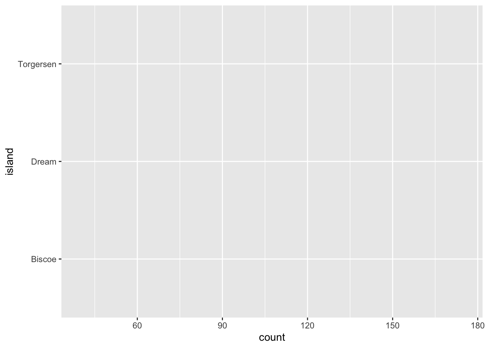
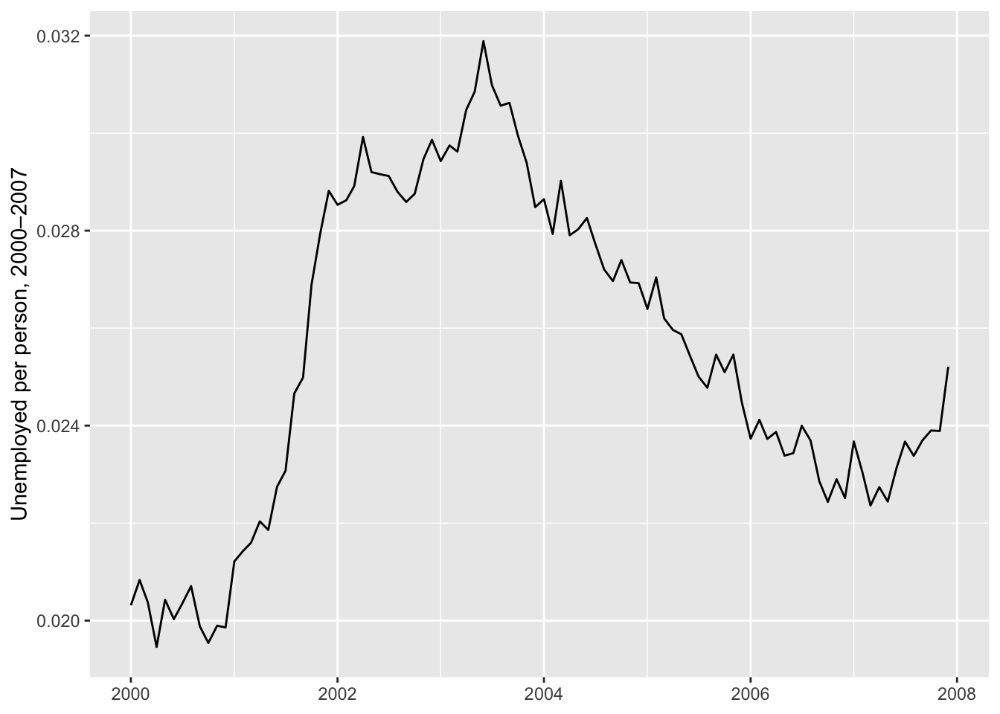
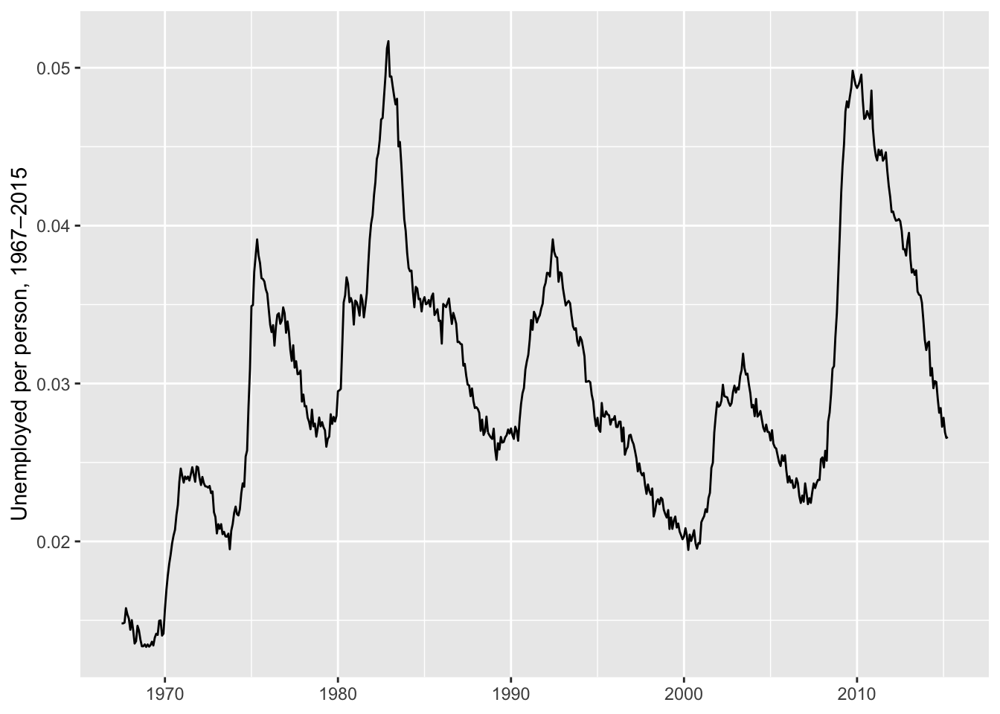
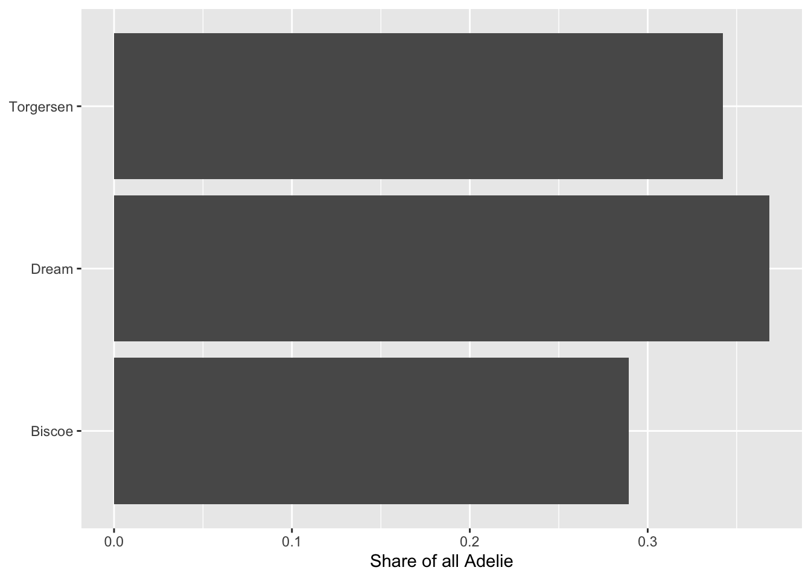
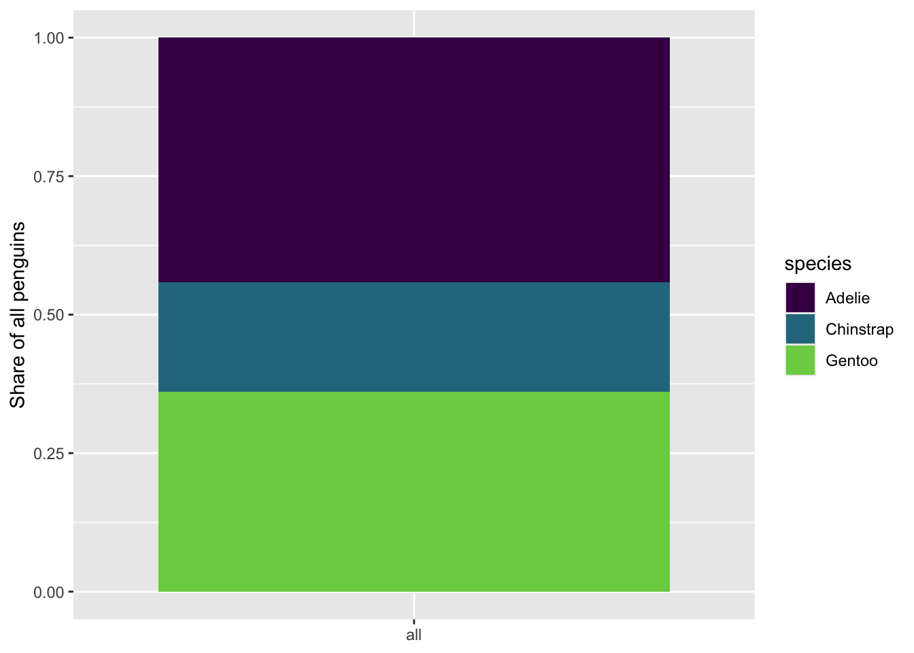
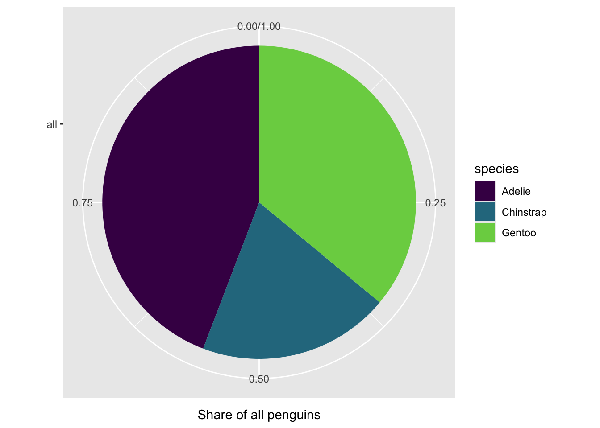

library(tidyverse)
penguins <- read_csv("data/penguins.csv", show_col_types = FALSE)
# Colors that color-blind viewers can tell apart (more in Module 13)
options(ggplot2.discrete.fill = function() scale_fill_viridis_d(end = 0.8))Module 12 · Practice: stats and coordinates
Deeper practice with solutions · each exercise is the pattern for a Guided Project task
Work these in your module-12-stats project in Posit Cloud, or just read them. Every exercise uses penguins or data that comes with R, so the patterns are the same for everyone. The solutions are visible: try first, then open them.
| Exercise | Pattern | Guided Project task |
|---|---|---|
| D1 · Count → share | rate within each group (question A) | A1, B1 |
| D2 · A summary with its spread | rate ± se; mean with sd and se | A2, B2 |
| D3 · Zoom or filter? | coord_cartesian() vs scale limits; Lie Factor |
A3, B3 |
| D4 · Change the frame | question B; sideways bars; bar vs pie | A4, B4 |
D2 · A summary with its spread
Goal. Show each species’ rate of heavy penguins (over 4000 g) with its standard error and its n. (Session 1, slides 13–16.)
Your turn. Finish the summary, then draw the rates with ±se.
d2_rates <- penguins %>%
drop_na(body_mass_g) %>%
mutate(has_outcome = body_mass_g > 4000) %>%
group_by(species) %>%
summarize(
n = n(),
rate = mean(has_outcome),
se = ___ # the se of a rate
)
ggplot(d2_rates, aes(x = rate, y = species,
xmin = rate - se, xmax = rate + se)) +
geom_pointrange() +
geom_text(aes(label = paste("n =", n)), nudge_y = 0.3)Investigate. Whose range is widest? Look at its n and its rate.
TipSolution
d2_rates <- penguins %>%
drop_na(body_mass_g) %>%
mutate(has_outcome = body_mass_g > 4000) %>%
group_by(species) %>%
summarize(
n = n(),
rate = mean(has_outcome),
se = sqrt(rate * (1 - rate) / n)
)
d2_rates# A tibble: 3 × 4
species n rate se
<chr> <int> <dbl> <dbl>
1 Adelie 151 0.232 0.0343
2 Chinstrap 68 0.221 0.0503
3 Gentoo 123 0.992 0.00810ggplot(d2_rates, aes(x = rate, y = species,
xmin = rate - se, xmax = rate + se)) +
geom_pointrange() +
geom_text(aes(label = paste("n =", n)), nudge_y = 0.3) +
labs(x = "Share heavier than 4000 g", y = NULL)
The se of a rate is sqrt(rate * (1 - rate) / n): it grows when n is small and when the rate is near 0.5. Chinstrap has the smallest n, so its range is wide; Gentoo’s rate is close to 1, so its range is narrow even with a similar n to Adelie.
D2b · A mean with its two spreads (Guided Project B2)
d2b <- penguins %>%
drop_na(flipper_length_mm) %>%
group_by(species) %>%
summarize(
n = n(),
mean = mean(flipper_length_mm),
sd = sd(flipper_length_mm),
se = sd / sqrt(n)
)
d2b# A tibble: 3 × 5
species n mean sd se
<chr> <int> <dbl> <dbl> <dbl>
1 Adelie 151 190. 6.54 0.532
2 Chinstrap 68 196. 7.13 0.865
3 Gentoo 123 217. 6.48 0.585Investigate. Chinstrap’s mean is about 5.9 mm above Adelie’s. Big compared to the se? Compared to the sd? (Session 2, slide 7.)
TipSolution
Compared to the se (under 1 mm), 5.9 mm is large: we are confident the means differ. Compared to the sd (about 6.5–7 mm), it is less than one sd: many individual Adelie and Chinstrap penguins have similar flippers. Say which comparison you mean.
D2+ · Optional: see the noise (resampling)
Redraw the penguins with replacement 200 times and compute each species’ rate again. The width of each cloud is the uncertainty the se describes. (map() and slice_sample() are new; read and run, no need to write them.)
# same redraws every time you run it
set.seed(3901)
resamples <- map(1:200, \(i) {
penguins %>%
drop_na(body_mass_g) %>%
slice_sample(prop = 1, replace = TRUE) %>%
group_by(species) %>%
summarize(rate = mean(body_mass_g > 4000))
}) %>%
bind_rows(.id = "draw")
ggplot(resamples, aes(x = rate, y = species)) +
geom_point(alpha = 0.1) +
labs(x = "Rate in each of 200 redraws", y = NULL)
Talk. Which species’ cloud is widest? Does that match D2’s ranges?
D3 · Zoom or filter?
Goal. See what a zoomed axis does to bars, and compute its Lie Factor. (Session 2, slides 4–7.)
Your turn. Zoom the counts so the view starts at 40, then filter with the same limits.
d3_counts <- ggplot(penguins, aes(y = island)) +
geom_bar()
d3_counts + ___(xlim = c(40, 175), expand = FALSE) # zoom
d3_counts + ___(limits = c(40, 175)) # filterInvestigate. Compute the Lie Factor of the zoomed plot for Biscoe (168) vs Torgersen (52).
TipSolution
d3_counts <- ggplot(penguins, aes(y = island)) +
geom_bar()
d3_counts + coord_cartesian(xlim = c(40, 175), expand = FALSE)
d3_counts + scale_x_continuous(limits = c(40, 175))

drawn_ratio <- (168 - 40) / (52 - 40)
data_ratio <- 168 / 52
drawn_ratio / data_ratio[1] 3.301587The zoom keeps all the data but cuts the bars at 40: Biscoe looks about 10.7 times longer than Torgersen, while the counts differ 3.2 times, a Lie Factor of about 3.3. The filter removes the bars, because every bar starts at 0, outside the limits. Bars start at 0; to look closer, use points and say so.
D3+ · Compared to what? A narrow time window
economics (built into ggplot2) has monthly US data from 1967 to 2015.
economics %>%
filter(date >= as.Date("2000-01-01"), date < as.Date("2008-01-01")) %>%
ggplot(aes(x = date, y = unemploy / pop)) +
geom_line() +
labs(x = NULL, y = "Unemployed per person, 2000–2007")
ggplot(economics, aes(x = date, y = unemploy / pop)) +
geom_line() +
labs(x = NULL, y = "Unemployed per person, 1967–2015")

Talk. What story does the left plot tell on its own? What does the full series add? Why divide by pop? (Tufte’s “compared to what?” and standardized units, 2001, p. 77.)
TipSolution
The 2000–2007 window shows a rise and a fall that look dramatic; the full series shows they are small next to the peaks of the early 1980s and 2009. Dividing by the population makes years comparable: the number unemployed grows partly because the population grows.
D4 · Change the frame
Goal. Ask question B (of all Adelie, what share lives on each island?) and compare the frames. (Session 1, slide 17; Session 2, slides 9–11.)
Your turn. Keep the Adelie, count per island, and turn the counts into shares of all Adelie. Draw them sideways.
d4_shares <- penguins %>%
filter(species == "Adelie") %>%
count(island) %>%
mutate(share = ___)
ggplot(d4_shares, aes(x = share, y = island)) +
geom_col()Investigate. D1 said Torgersen is the “most Adelie” island. Does D4 agree?
TipSolution
d4_shares <- penguins %>%
filter(species == "Adelie") %>%
count(island) %>%
mutate(share = n / sum(n))
d4_shares# A tibble: 3 × 3
island n share
<chr> <int> <dbl>
1 Biscoe 44 0.289
2 Dream 56 0.368
3 Torgersen 52 0.342ggplot(d4_shares, aes(x = share, y = island)) +
geom_col() +
labs(x = "Share of all Adelie", y = NULL)
No: of all 152 Adelie, Dream holds the largest share (about 37%), Torgersen 34%, Biscoe 29%. Question A (÷ island total) and question B (÷ Adelie total) answer different questions; say which one you mean.
D4+ · Bar or pie?
p_share <- ggplot(penguins, aes(x = "all", fill = species)) +
geom_bar(position = "fill") +
labs(x = NULL, y = "Share of all penguins")
p_share
p_share + coord_polar(theta = "y")

Talk. Adelie (44%) or Gentoo (36%): which is easier to compare on the bar, and on the pie? Why? (Tufte, 2001, p. 77: don’t show more dimensions than the data have.)
TipSolution
On the bar, both are lengths on one scale from 0 to 1, easy to compare. On the pie, you compare angles and areas, which people judge less accurately, especially when slices are close. The data have one dimension (a share per species); the pie spreads it over angle and area: more work for the reader, and no new information. Prefer the bar.
Data: Horst, A. M., Hill, A. P., & Gorman, K. B. (2020). palmerpenguins: Palmer Archipelago (Antarctica) penguin data (R package). midwest and economics come with ggplot2 (Wickham, Navarro & Pedersen, ggplot2, 3rd ed.).